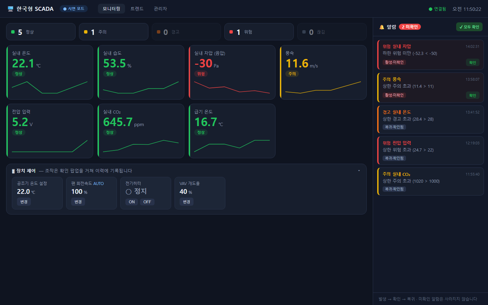
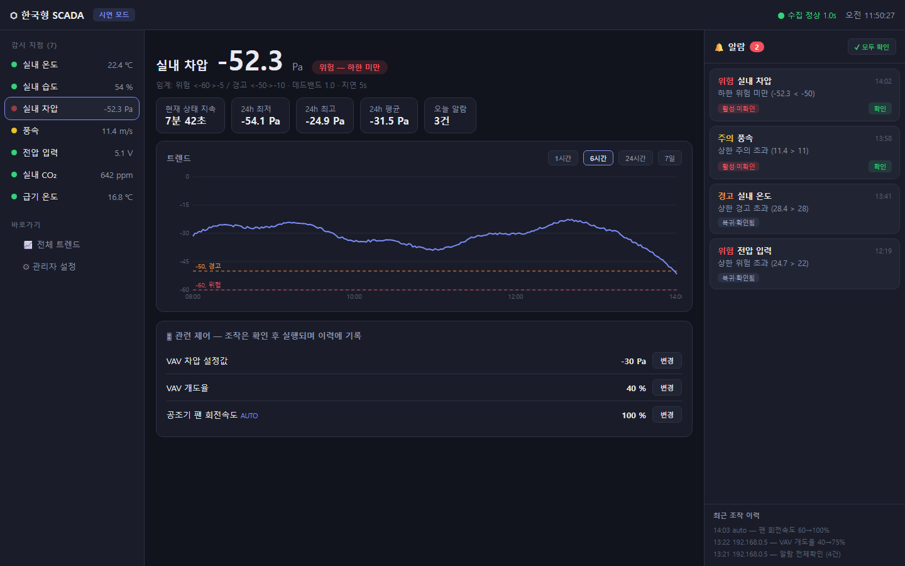
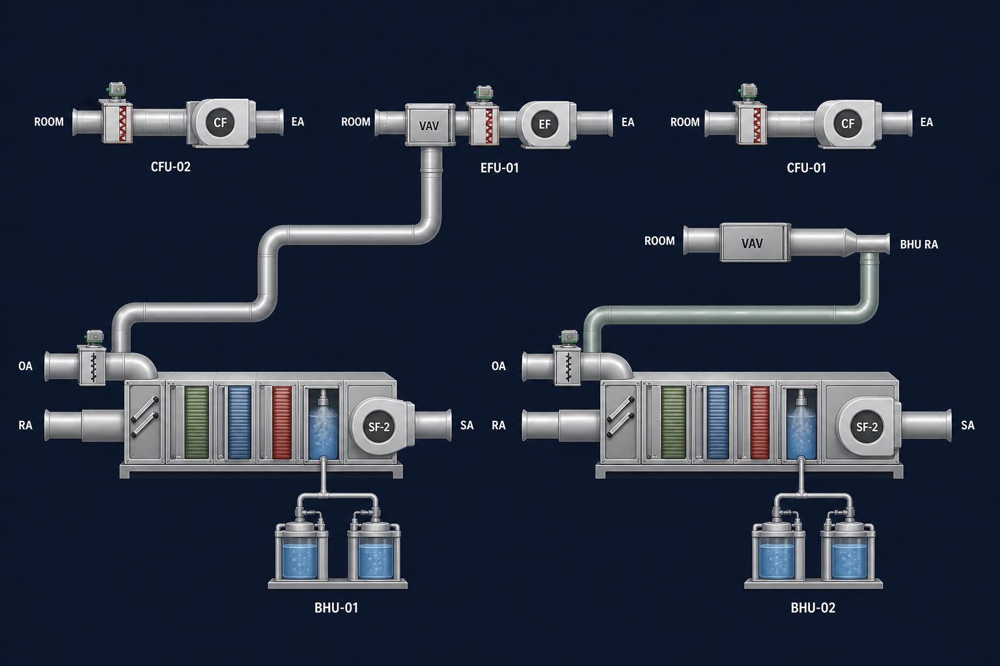
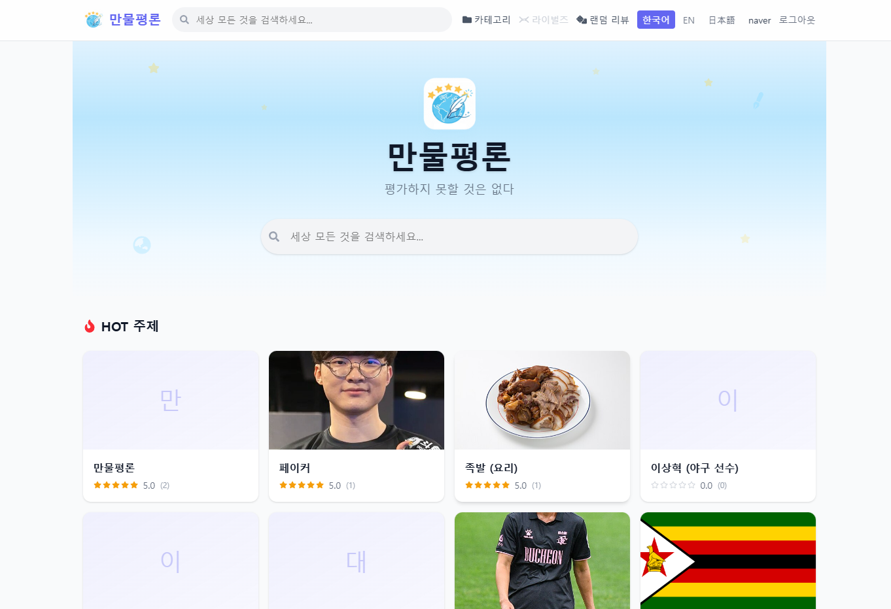
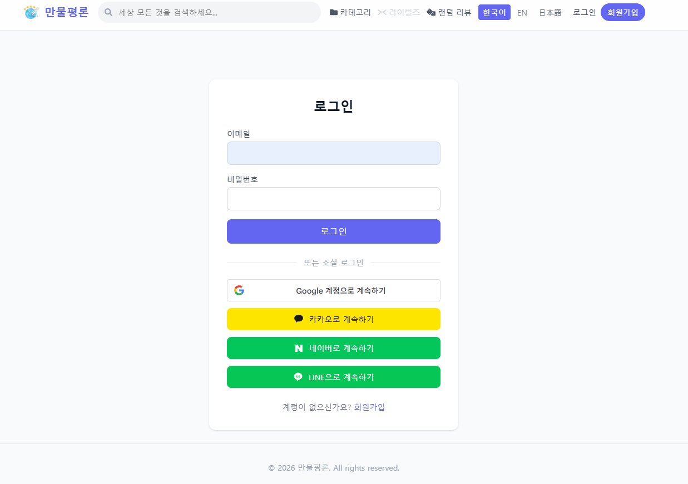
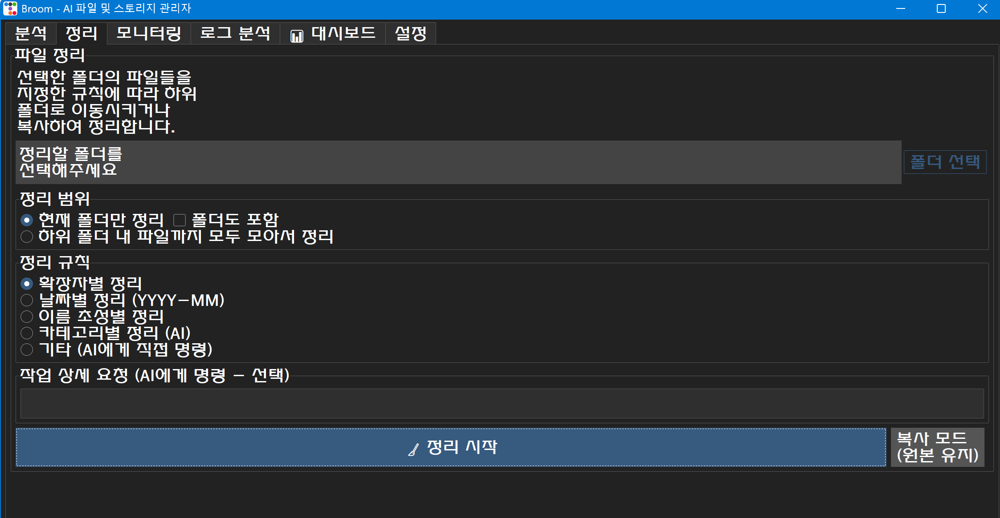

소개 · 이력
실무 경험
엠클라우독 기술지원팀 현장실습
2025.07 ~ 2025.08 · 클라우드 솔루션 기업 · 실습생
- 고객사 시스템 사용 문의 및 장애 접수 1차 대응
- 인시던트 관리 시스템에 기술 이슈 티켓 등록·분류 및 이슈 트래킹
- 고객사 시스템 정기 월간점검·로그 점검 지원으로 잠재 오류 사전 예방
군 경력
공군 전산특기병 (병장 만기전역)
2022.05 ~ 2024.02
- 부대 라우터 관리 업무 담당
- 전산 장비 유지보수 및 타 부서 하드웨어 장애 지원
학력
동양미래대학교 컴퓨터소프트웨어공학과
- 2026.03 ~ 2027.02 · 학사학위 전공심화 졸업예정4.29 / 4.5
- 2021.03 ~ 2026.02 · 졸업3.78 / 4.5
자격증 · 어학
- 리눅스마스터 2급2025.03 · 한국정보통신진흥협회
- 프로그래밍기능사2021.12 · 한국산업인력공단
- 新JLPT N32024.01
수상
동아리
전공 학술·개발 동아리 M.I.T 회장
2026.03 ~ 2026.07
- 연간 활동 계획 수립, 전공 스터디·프로젝트 커리큘럼 기획
- 신규 부원 모집, 부원 간 기술 교류 활성화
- 프로젝트 일정 조율, 학과·외부 행사 연계
기술 스택
Network · Infra
Backend
Monitoring · 운영
Client · AI
PROJECT 01
한국형 클라우드 SCADA HMI 시스템 — PLC 원격 모니터링·제어
2026.07 ~ 2026.10 · 수공테크 산학협력 · AI 개발 및 현업 문제점 개선 담당 · 비공개 저장소

▲ 모니터링 대시보드 (시연 모드). 센서별 실시간 값과 추이, 4등급 알람, 장치 제어 패널

▲ 센서 상세 화면. 기간별 트렌드와 임계선, 관련 제어, 최근 조작 이력

▲ 공조 설비(AHU·VAV·댐퍼) HMI 배경. 도면을 AI가 분석해 만든 화면 위에 실시간 값을 배치합니다.
개요
수공테크와의 산학협력으로 진행한 프로젝트입니다. 관제 현업의 수동 모니터링 방식과 장애 감지 지연을 문제로 정의하고, 현장의 LS산전 XGT PLC에서 온도·습도·차압 등 센서 값을 실시간으로 수집해 웹에서 모니터링·알람·원격 제어를 할 수 있는 SCADA 시스템을 만들었습니다. 현장 PC의 에이전트가 PLC 데이터를 클라우드 서버로 보내는 구조라서, 작업자는 사무실에서도 여러 현장을 원격으로 확인할 수 있습니다.
구현 내용
- PLC 시리얼(Cnet) 통신으로 실데이터 수신 성공, Modbus 테스트 도구 별도 작성
- 센서 소스를 추상화해 코드 수정 없이 관리자 페이지에서 센서·임계값 추가
- 4등급 알람 (주의 / 경고 / 위험 / 연결 끊김)과 로그파일·이메일·웹훅 알림
- SQLite 일별 파티션, 1분·1시간 집계, 알람 저널, 조작 이력(audit) 기록
- 시뮬레이션 / 실장비 모드를 실행 파일·설정·DB까지 분리해 시연 중 실장비 설정 오염 방지
- AI HMI 어시스턴트: 도면 이미지를 분석해 HMI 화면을 자동 생성하고 대화로 수정. 모델 출력은 허용된 요소·좌표 범위로 검증하고, API 키는 서버에만 보관
- PDF·CAD(DXF) 도면에서 장비 태그·좌표를 추출해 AI 배치의 위치 힌트로 활용
- 같은 저장소에서 현장 측정 기록 앱(FieldLog) 개발: 엑셀 보고서 자동 생성, 원본 대비 셀 432개 불일치 0건
네트워크 · 운영 관점
- 통신 장애를 별도 상태로 구분: PLC 응답이 없으면(포트 없음·케이블 빠짐) "위험"이 아닌 회색 "연결 끊김"으로 표시하고, 가짜 값으로 대체하지 않습니다.
- 현장 에이전트 → 클라우드 push 구조: 클라우드 서버에 연결할 수 없으면 데이터를 디스크에 버퍼링했다가 재연결 시 전송합니다.
- 중앙 설정 배포: PLC 주소·포트 맵을 클라우드 관리자 페이지에서 관리하고, 에이전트가 이를 내려받아 적용합니다. 에이전트는 키로 인증합니다.
- 무중단 운영: Windows 부팅 시 자동 시작 등록, 비밀번호 pbkdf2 해시 저장
PROJECT 02
Qring — 외국어 퀴즈 학습 앱 (백엔드 · 배포)
2026.04 ~ 2026.09 · 팀 4명 · 백엔드 담당 · 백엔드 커밋 241건 중 145건
배포 아키텍처
사용자 앱 · 브라우저
Cloudflare Edge
DNS · TLS 종료 (q-ring.app)
(아웃바운드)
온프레미스 PC · Docker Compose 네트워크
cloudflared
외부 포트 없음
Spring Boot
:8080
MySQL 8
:3306
▲ 공인 IP·포트포워딩·방화벽 변경 없이 외부에 서비스를 공개한 구조
구현 내용
- 회원가입·로그인·이메일 인증, JWT 인증, 카카오 등 소셜 로그인과 닉네임 중복 처리
- 대시보드(이번 주 요일별 학습 여부), 포인트 적립, 오답노트 API
- FCM 푸시 알림 설계·구현: 오답 생성 6일차 20시 리마인더 스케줄러, 1인 다기기 토큰 테이블
- OpenAI 기반 인터랙티브 스토리 기능 (JSON 응답 모드, 세션 TTL 관리)
- 배포 가이드·API 명세·파일 맵·푸시 알림 설계서 등 문서화, Git 컨벤션 운영
네트워크 · 운영 관점
- NAT 뒤의 서버를 외부에 공개: cloudflared가 Cloudflare로 아웃바운드 QUIC 연결을 먼저 맺고, 사용자 요청이 그 연결을 타고 들어오도록 구성했습니다.
- 컨테이너 네트워크: 3개 서비스가 같은 Docker 네트워크에서 서비스 이름으로 통신하고, DB는 healthcheck를 통과한 뒤 백엔드가 기동되도록 순서를 지정했습니다.
- 재현 가능한 배포:
git clone→ 시크릿 파일 2개 복사 →docker compose up -d --build한 줄로 다른 PC에 이전할 수 있습니다. - 환경 차이로 생긴 장애 해결: Docker(Linux)의 MySQL에서만 테이블명 대소문자가 구분되어 생긴 오류를 찾아 수정했습니다.
PROJECT 03
만물평론 (All the Review) — 세상 만물 평론 커뮤니티
2025.11 ~ 2026.05 · 1인 개발 · 기획·프론트엔드·백엔드·배포 전담 · allreview.world 도메인 배포

배포 아키텍처
사용자 브라우저
Cloudflare
allreview.world · www 라우팅
(아웃바운드)
Docker Compose 네트워크
cloudflared
ingress
Nginx
정적 파일 · /api 프록시
Spring Boot
:8080
PostgreSQL 17
healthcheck
Redis 7
요청 제한 카운터
▲ Nginx가 화면은 직접 응답하고 /api 요청만 백엔드로 넘기는 리버스 프록시 구조
구현 내용
- "평가하지 못할 것은 없다" — 사물부터 개념까지 무엇이든 별점과 한줄평을 남기는 커뮤니티
- 위키백과 API 연동 검색, 결과가 없으면 사용자가 직접 항목 등록
- 리뷰 수·좋아요·경과 시간을 반영한 HOT 점수를 5분마다 재계산
- 이메일 인증 회원가입, Google · 카카오 · 네이버 · LINE 소셜 로그인, JWT 인증
- 금지어 필터, 신고 누적 시 자동 블라인드, 경고·제재, 관리자 페이지
- 한국어 · 영어 · 일본어 다국어 지원
네트워크 · 운영 관점
- Nginx 리버스 프록시: 한 도메인에서 화면과 API를 함께 제공하고,
X-Real-IP·X-Forwarded-For헤더로 실제 사용자 IP를 백엔드에 전달합니다. - IP 기반 요청 제한: 로그인 1분 10회, 회원가입 5회, 인증메일 재발송 3회처럼 엔드포인트별로 한도를 두고 Redis로 IP별 요청 수를 세어, 넘으면
429 Too Many Requests를 반환합니다. 무차별 대입 공격과 메일 폭탄을 막기 위한 장치입니다. - 도메인 구매·DNS 설정·라우팅: 커스텀 도메인을 구매해 DNS를 설정하고, Cloudflare Tunnel ingress로
allreview.world와www를 프론트 컨테이너에 연결하고, 그 외 호스트 요청은 404로 차단합니다. - 안전한 기동 순서: PostgreSQL·Redis가 healthcheck를 통과한 뒤에만 백엔드가 뜨도록 의존성을 지정했습니다.
- 스팸 계정 차단: 일회용 이메일 도메인으로는 가입할 수 없게 막았습니다.

HOT 점수 공식
(리뷰 수 × W₁ + 좋아요 수 × W₂) ÷ (경과 시간 + 2)G
단순 개수 순이 아니라 시간이 지날수록 점수가 내려가도록 중력 계수 G를 두어, 지금 활발한 주제가 메인에 오르게 했습니다.
PROJECT 04
Broom 🧹 — 생성형 AI 기반 파일 정리 · 모니터링 프로그램
2025 ~ 2026.06 · 팀 3명 · 2025 대한전자공학회 추계학술대회 포스터 (제1저자) · 2026 한국정보기술학회 하계 논문 (주저자)

구현 내용
- 사용자 수준별 3단계 모드 (간단 / 일반 / 프로)
- 시스템 폴더를 건드리기 전 안전성 검사와 경고
- AI 청소 제안, 자연어 규칙 기반 폴더 정리, 폴더 아이콘 이미지 생성
- 대용량 디렉토리 탐색을 C++ 모듈(pybind11)로 작성해 속도 개선, 순환 링크 방지
- 사용자 11명 설문으로 만족도·난이도 분석 후 개선점 도출
- 후속 연구로 파일 메타데이터·콘텐츠 기반 자동 분류 파이프라인과 저장소 실시간 모니터링 로직을 고도화하고, 비교 실험으로 검증해 논문 집필
네트워크 · 운영 관점
- 능동적 모니터링: 지정한 저장 공간을 주기적으로 스캔하고, 규칙에 걸리면 이메일로 알립니다.
- AI Ops식 로그 분석: 다른 프로그램이 한 파일 작업까지 감지해 로그로 남기고, AI가 무슨 작업이었는지 추론해 통계 대시보드로 보여줍니다.
- 안전한 파일 작업: 모든 정리·삭제 작업 전에 안전성 검사를 거치고, 정리 미리보기로 결과를 확인한 뒤 실행합니다.
PROJECT 05
여긴어디 (WhereAmI) — 지하철 이동 도우미 앱
2025.12 ~ 2026.01 · 팀 프로젝트 · 커밋 56건 · 비공개 저장소
구현 내용
- 출발·도착역 선택, 지하철 전용 경로 검색, 환승·빠른 하차 위치 안내
- 네이버 지도 연동, 호선별 색상 마커, 실시간 열차 위치 추적
- 홈 화면 위젯, 상단 고정 알림, 음성 안내(TTS)
- 역별 화장실(9호선 포함)·첫차·막차 정보
네트워크 · 운영 관점
- 외부 API 4종 연동: ODsay(경로), 서울시 실시간 도착 정보, 국가철도공단, 네이버 지도. 역 검색 API를 교체하고 호출 방식을 바꿔 불필요한 요청을 줄였습니다.
- 불안정한 신호 처리: 지하에서는 GPS가 불안정하므로, 도착 정보 API 50% · GPS 30% · 센서 기반 추측 항법 20%를 가중 합산하고 GPS 오차가 50m를 넘으면 계산에서 자동 제외합니다.
PROJECT 07
AI 공정성(Fairness) 연구 — 신뢰 가능한 인공지능 구축
2026.05 ~ 2026.10 · 동양미래대학교 정부지원과제 연구원 · 2026 대한전자공학회 추계학술대회 논문경진대회 주저자 (논문집 등재)
담당 업무 — 공정성 평가지표 분석 및 편향 완화 알고리즘 검증
- 데이터 수집·학습 과정에서 나타나는 잠재적 왜곡과 집단 간 편향 식별
- 최신 AI 공정성 평가지표 분석 및 편향 완화(Mitigation) 알고리즘 적용 실험
- 모델 성능 저하를 막으면서 데이터 불균형·편향을 최소화하는 검증 프로세스 진행
기초 분석 예시 — COMPAS 재범 예측 데이터 (Logistic Regression / Random Forest)
인종별 오탐률 (FPR)
재범하지 않을 사람을 "재범 위험"으로 잘못 판단한 비율
실제 재범률 차이는 1.34배인데 오탐률 차이는 1.92배입니다.
성별 변수 제거 전후 오탐률
남성 / 여성 FPR
성별 포함
성별 제외
격차가 5.7배에서 2.2배로 줄었지만 사라지지는 않았습니다.
결론
- 인종·성별 변수를 빼도 예측 성능은 거의 그대로였습니다 (LR AUC 0.73, 정확도 0.680 → 0.688).
- 그러나 전과·나이 등 다른 변수가 보호 속성을 대신 드러내기 때문에, 변수 삭제만으로는 편향이 해결되지 않습니다.
- 집단 간 실제 재범률이 다르면 정확도와 오판율의 공정성을 동시에 만족할 수 없다는 "불가능성 정리"를 실험으로 확인했습니다.
PROJECT 08
디유 에이드 (DMU AID) — e-Class 크롬 확장 프로그램
2026.03 ~ 2026.04 · 1인 개발 · Chrome 웹 스토어 게시
구현 내용
- 브라우저 사이드 패널에서 예정된 할 일, 새 과제·공지 알림, 수강 강좌를 한눈에 표시
- 개인 To-Do 관리
- Chrome 웹 스토어에 직접 게시
네트워크 관점
- 세션 기반 연동: 사용자가 이미 로그인한 e-Class의 쿠키 세션을 이용해 별도 로그인 없이 데이터를 가져오고, 연결 상태를 표시합니다.
- 최소 권한: 접근 호스트를 e-Class 도메인 하나로 제한했습니다 (Manifest V3).
- 백그라운드 주기 확인: 서비스 워커와 alarms API로 새 과제·공지를 주기적으로 확인합니다.